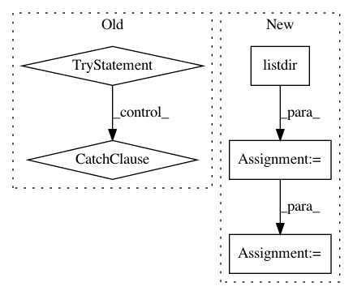

43900d342b205d66d196313d0f77c534df246a7f,bird-or-bicycle/bird_or_bicyle/dataset.py,,_crop_and_resize_images,#Any#,154
Before Change
def _crop_and_resize_images(split_root):
print("Cropping images to correct shape and size...")
try:
cmd = "find {data_dir} -name \"*.jpg\" | \
xargs -P{N_WORKERS} -I % convert % \
-resize \"299^>\" \
-gravity center \
-crop 299x299+0+0 %".format(data_dir=split_root, N_WORKERS=N_WORKERS)
subprocess.check_call(cmd, shell=True)
except subprocess.CalledProcessError as e:
print("\nERROR: convert command failed.\nTry "sudo apt-get install imagemagick"\n")
raise (e)
def _get_bird_and_bicycle_image_ids(split):
Return a map from label to set of image ids
label_name_to_image_ids = {}
for label_name in ["bird", "bicycle"]:
After Change
print("Cropping images to correct shape and size...")
for label_name in ["bird", "bicycle"]:
class_dir = os.path.join(split_root, label_name)
images_in_class = os.listdir(class_dir)
image_paths = [os.path.join(class_dir, image_name) for image_name in images_in_class]
_map_with_tqdm(_resize_and_centercrop_image, image_paths,
total=len(image_paths))
In pattern: SUPERPATTERN
Frequency: 3
Non-data size: 5
Instances
Project Name: google/unrestricted-adversarial-examples
Commit Name: 43900d342b205d66d196313d0f77c534df246a7f
Time: 2018-09-02
Author: nottombrown@gmail.com
File Name: bird-or-bicycle/bird_or_bicyle/dataset.py
Class Name:
Method Name: _crop_and_resize_images
Project Name: theislab/scanpy
Commit Name: 3e8c80ed9857631d6ce5d1adb35f451b9f780cb7
Time: 2017-02-28
Author: f.alex.wolf@gmx.de
File Name: scanpy/examples/__init__.py
Class Name:
Method Name: get_example
Project Name: philipperemy/deep-speaker
Commit Name: 93799ac3f4183b6dcd55cccf9655ae6e4c80849b
Time: 2017-12-02
Author: daniel-schreiber@gmx.de
File Name: utils.py
Class Name:
Method Name: create_dir_and_delete_content